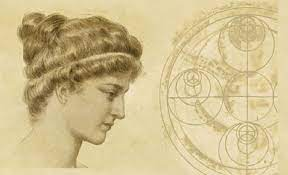
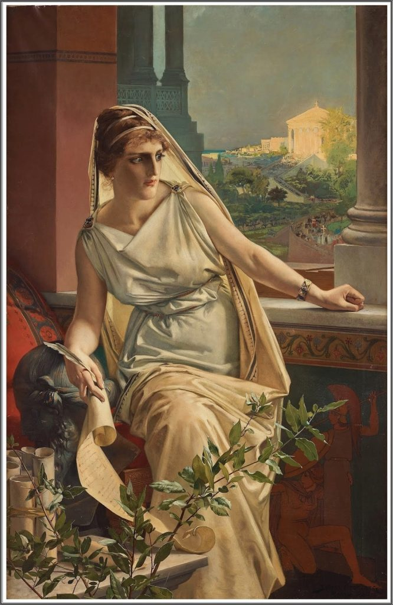
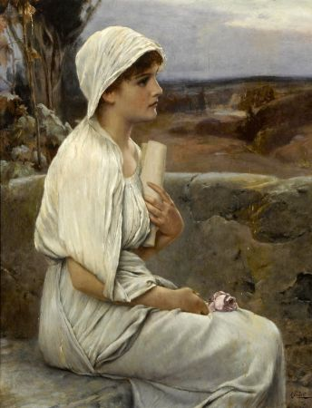
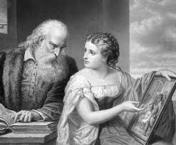
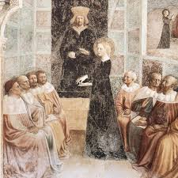

Tanrılardan Ateşi Çalacağız!
Anasayfa |
Özgür Kadın Hypatia |
Hypatia’nın Vahşice Öldürülmesi|
İletişim
Antik Dünyanın Son Bilim İnsanı İskenderiyeli Hypatia Kimdir?

M.S. 4. yüzyılda İskenderiye şehri eski parıltısının büyük bölümünü yitirmişti. Zenginliği Roma idaresiyle birlikte büyük oranda azalmış; şehir, sivil ve dini çatışmalarla bozulmuştu. Şehir kütüphanesinin büyük bölümü yanmıştı. Müze, bir düzensizliğin içine düşmüştü ve kayıtlı son üyesi Theon adındaki bir filozof ve matematikçiydi. Kendi çapında hem güneş hem de ay tutulmalarıyla ilgili doğru hesaplamalarda bulunan parlak bir filozof ve öğretmen olmasına rağmen, ünü, önemli ölçüde dikkat çeken genç bir kadının babası olmasından geliyordu. Söz konusu genç kadın güzelliği ve zekâsıyla tanınıyor, matematik ve felsefedeki başarıları onu İskenderiye’nin en parlak sakinlerinden biri yapıyor; öğretileri, bazı en büyük Pagan ve Hristiyan liderlerin etkisi altına alıyordu. Parlak yaşamı ve trajik ölümü antik dünya tarihinin yüksek ve alçak noktalarını gösteriyordu. Adı İskenderiyeli Hypatia idi.

Hypatia, M.S. 370 civarında doğdu. Tam tarih bilinmiyor ama kız çocuklarına nadiren eğitim verildiği ve kadınların kendileri için belirlenen rollerin dışına çıkmasının yasaklandığı bir zamanda Theon, kızının birinci sınıf bir eğitimden faydalanmasını sağladı. Hypatia’ya matematik, astronomi ve felsefenin inceliklerini öğretti ve kızı da yetenekli bir öğrenci olduğunu kısa sürede kanıtladı. Erken dönem Hristiyan tarihçi Sokrates Skolastikus, onun babasının sıra dışı doğasını miras aldığını ve babasından aldığı matematik eğitimiyle yetinmeyip, fark edilir bir biçimde başka öğrenme yollarına da yöneldiğini anlatıyor. Hypatia, Theon’dan yalnızca ders almıyor, aynı zamanda ona işinde de yardım ediyordu. Theon, müzedeki görevlerinin bir parçası olarak eski metinleri düzenliyor ve Öklid’in Elementler ve Yunan astronom Ptolemy’nin -Mısır kralıyla karıştırılmamalı- çalışmaları üzerine eleştiriler yazıyordu. Hypatia, babasına yardım etmişti ve Almagest üzerine yaptığı eleştiri şöyle bir sunumu içeriyordu: ”İskenderiyeli Theon’un, Ptolemy’nin Almagest’inin III. Kitap’ı üzerine eleştirisi. Kitap, kızım filozof Hypatia tarafından gözden geçirilmiştir.”

Hypatia’nın Matematik Çalışmaları
Kısa bir süre içinde Hypatia, büyük geometrici Pergeli Apollonuius’un çalışmaları ve Diyofantus’un Aritmetika’sı da dahil olmak üzere kendi eleştirilerini yazmaya başladı. Diyofantus üzerine yazıları ayrıntılıdır, çünkü cebirin babası olarak görülse de bilindiği üzere yoğun ve anlaşılması zor bir yazardı. Hypatia’nın açık ve anlaşılır açıklamaları olmasa, orijinal çalışmaları yaşayamaz ve modern matematiğin temelini oluşturamazdı. Sadece diğerlerinin keşifleri üzerine eleştiriler yapmakla tatmin olmayan Hypatia, kısa bir süre sonra kendi araştırmasını üstleniyordu. Bu sıralarda yeni tür bir usturlap geliştirdi. Astronomlar tarafından güneş ve yıldızların konumlarını hesaplamak için kullanılan bir aletti bu. Ayrıca daha fazla dünyevi gözlem yapmak için bir dizi alet yaptı. Bunların arasında suyun altındaki nesnelere bakmak için bir hidroskop ve sıvıların yoğunluğunu ve özgül ağırlıklarını ölçmekte kullanılan hidrometre de vardı.

Hypatia’nın Ünü
M.S. 400 civarında Hypatia, babasının ardından neoplatonist felsefe okulunun başına geçti. Öğrenciler onu kitleler halinde takip ediyordu ve Hypatia, kısa süre sonra onların arasında Roma İmparatorluğu’nun en güçlü ailelerinin çocuklarını görmeye başladı. Hypatia, zamanın birçok okulundan farklı olarak, kendisi bir Pagan olmasına rağmen Hristiyan ve Yahudileri özgürce kabul ediyordu. Ne yazık ki Hypatia’nın kendi yazılarından hiçbiri hâlihazırda mevcut değil ama onunla ilgili birçok şey kendisine öğrencileri tarafından yazılan mektuplardan ve hayatı boyunca başkaları tarafından tutulan onunla ilgili kayıtlardan elde edilebilir. Yine Sokrates Skolastikus, Kilise Tarihi isimli çalışmasında onu şöyle anlatıyor:
”İskenderiye’de Hypatia isimli bir kadın vardı. Filozof Theon’un kızıydı ve kendi zamanındaki tüm filozofları edebiyat ve bilimdeki başarılarıyla geçmişti. Platon ve Plotinus’un okullarını takip ederek birçoğu öğretilerini dinlemek için uzak yerlerden gelen takipçilerine felsefenin ilkelerini öğretti. Zihnini geliştirmesi sonucu edindiği soğukkanlılık ve rahat tavırlarından dolayı sıklıkla yargıçların varlığında halkın içinde görünmekten çekinmiyor, ayrıca erkeklerden oluşan bir meclise katıldığında kendini mahcup hissetmiyordu. Erkekler sıra dışı asaleti ve etkileyiciliği nedeniyle ona daha da hayran oluyorlardı.”
